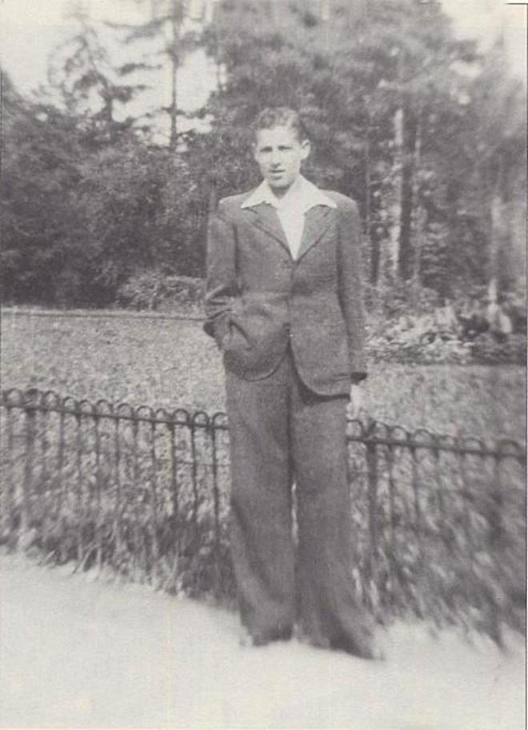

Portrait d’archive
Daniel Tytelman
Daniel TYTELMAN
Daniel TYTELMAN est né le 11/04/1928 à Fontainebleau en France.
Rassemblé à Lyon, il est déporté à Auschwitz le 27/03/1944 par le convoi n°70. Il est mort en déportation le 01/04/1944. Il avait 16 ans.
déporté seul. Déclaré officiellement "mort en déportation" au JO n°157 du 8/7/2001
Dernière adresse connue : rue Faucon (Montélimar)
Nom : TYTELMAN
Prénom(s) : Daniel
Date naissance : 11/04/1930
Âge (ans) : 13
Lieu naissance : Fontainebleau
Pays ou département : Seine et Marne
Lieu rassemblement : Lyon
Dernière adresse : rue Faucon
Ville : Montélimar
Code postal : 26200
N° Convoi : 70
Date déportation : 27/03/1944
Informations diverses : Daniel venu à Montélimar en 1936 avec ses parents Maurice et de Berthe (née Hassman), ses deux sœurs et deux grands-parents, fréquentait l'Ecole primaire supérieure de Montélimar. Étant pensionnaire, il était un des rares à rester le jeudi. C'est ce jour-là le 2 mars 1944 à Montélimar, que, dénoncé par un Juif belge qui trafiquait avec les occupants, il est pris dans son établissement scolaire et conduit à l'hôtel du Parc, siège de la Gestapo. Un gendarme compatissant lui donne discrètement à manger et prend soin de lui lorsque personne ne le voit. Pendant ce temps, une voisine des Tytelmann cache la sœur de Daniel, Sylvia, alors que l'autre sœur semble avoir été cachée dans son école rue des Quatre Alliances. Toute la famille réussit à partir dans l'Ardèche où, même s'ils sont dispersés dans plusieurs fermes, ils survivront durant les neuf mois précédant la Libération. Au bout de quelques jours, Daniel est embarqué pour la prison Montluc à Lyon d'où il sera transféré à Drancy. Il est parti le 27 mars de Drancy vers Auschwitz. Il serait mort, selon une version, fusillé pour avoir tenté de s'évader pendant le ralentissement du train à Bar-le-Duc, selon une autre, gazé dès son arrivée le 1er avril (Source: Robert Serre, De la Drôme aux camps de la mort, Valence, Peuple Libre/Notre Temps, 2006).
Frère de Mme Sylvia Yvan 8 rue des Saules 26200 Montelimar 04 75 01 09 96 .
Tytelman (Daniel), né le 11 avril 1928 à Fontainebleau (Seine-et-Marne), décédé le 1er avril 1944 à Auschwitz (Pologne) et non le 1er mai 1944 (sans autre renseignement). JO
Lieu de déportation : Auschwitz
Lieu de départ : Drancy
Nombre total de déporté·e·s du convoi : 1000
Gazé·e·s à l'arrivée : 480 (48 %)
Survivant·e·s en 1945 : 152 (15,2 %)